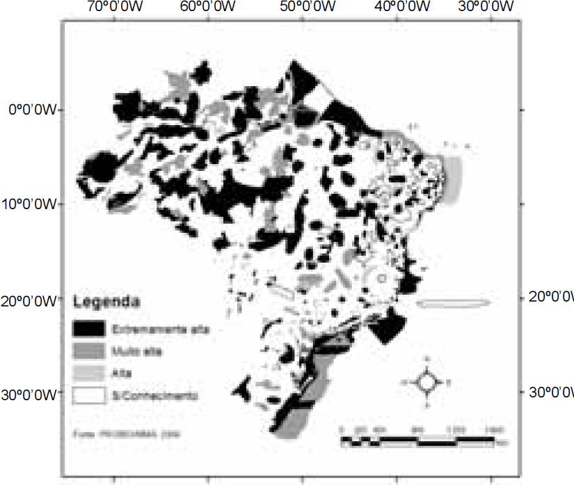
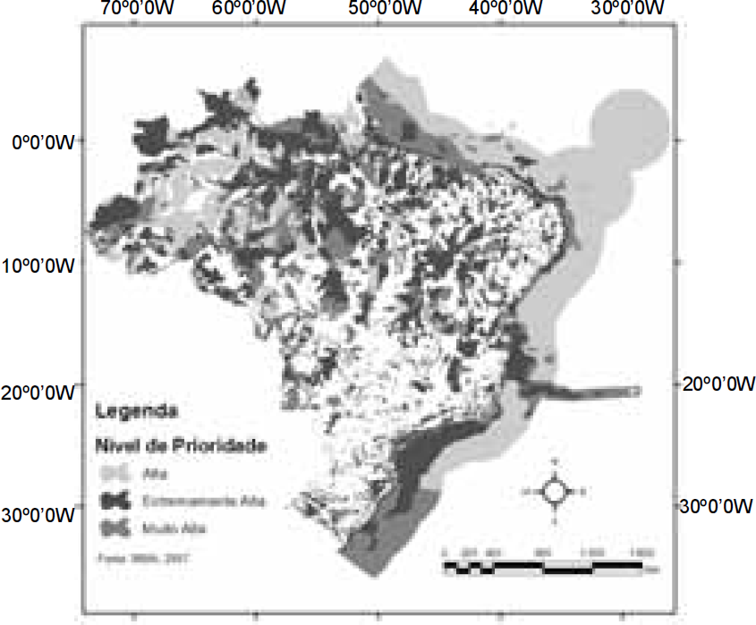

O Ministério do Meio Ambiente, com o objetivo de
indicar áreas prioritárias e estratégias para a
conservação da biodiversidade, apresentou dois
estudos sobre nível de prioridade, cujos resultados,
para anos distintos, estão resumidos nos mapas a
seguir.

Mapa 1

Mapa 2
Pela observação dos mapas acima e com base na
Política Nacional de Meio Ambiente, é possível
constatar que
-
as grandes áreas de reservas indígenas deixaram
de ser contempladas no mapa I.
-
o aumento significativo de áreas prioritárias
observado no mapa I deve-se à ampliação de
políticas públicas.
-
a gestão de áreas protegidas é limitada por
organizações da sociedade civil de interesse
público.
-
as áreas fragmentadas, em ambos os mapas,
oferecem poucos riscos demográficos e genéticos,
apesar dos efeitos de seu isolamento.
-
o estabelecimento e o manejo das áreas protegidas
restringem-se à composição local de espécies, ao
aparecimento e desaparecimento de ecossistemas
e à mudança da paisagem.